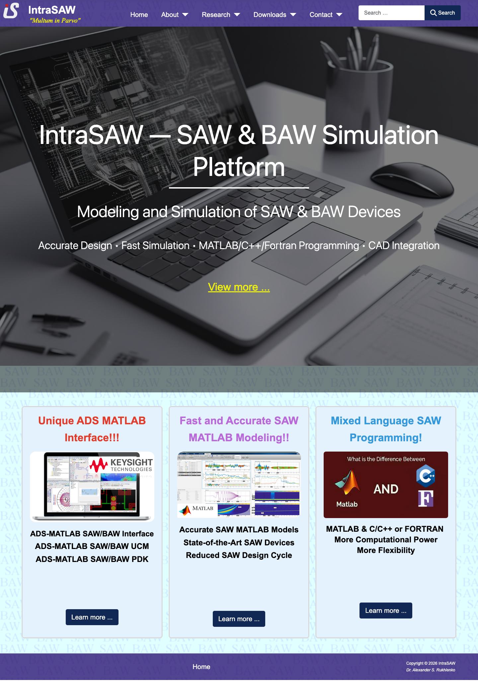
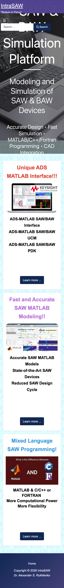

🔎 Аудит сайта • https://intrasaw.com/
IntraSAW: дизайн, SEO, UX и техкачество
Отчет собран по живой главной странице, `robots.txt`, `sitemap.xml`, HTML-метаданным, скриншотам desktop/mobile и проверке страниц из sitemap. Дата проверки: 4 июня 2026.
📌 Короткий вывод
Самая большая проблема не в содержании, а в упаковке: сильная техническая экспертиза подана как старый шаблонный Joomla-сайт.
🖼️ Скриншоты
Эти изображения показывают реальные проблемы визуальной и адаптивной верстки.


📊 Факты проверки
Цифры ниже помогают отличить субъективное впечатление от измеримых сигналов.
🚦 Оценка по UX-эвристикам
4 балла означает сильное современное решение. Здесь большинство проблем связано с иерархией, мобильной адаптацией и ясностью действий.
| Эвристика | Оценка | Ключевая проблема |
|---|---|---|
| Статус системы | 2/4 | Поиск и раскрывающиеся меню понятны, но нет ясного основного сценария. |
| Соответствие ожиданиям | 2/4 | Технические термины есть, но формат сайта не похож на современный expert/service сайт. |
| Контроль пользователя | 2/4 | Навигация есть, но CTA ведут на странные query/edit URL. |
| Консистентность | 1/4 | Inline-style, разные цвета заголовков, разные визуальные правила карточек. |
| Предотвращение ошибок | 2/4 | В sitemap есть 404, а robots запрещает URL, на которые ведут карточки. |
| Узнавание вместо памяти | 2/4 | Три карточки понятны, но `Learn more ...` не объясняет, куда ведет ссылка. |
| Эффективность | 2/4 | Search доступен, но занимает слишком много места на mobile. |
| Минимализм | 2/4 | Фон, герой, карточки и цвета спорят друг с другом. |
| Восстановление ошибок | 2/4 | 404 существует, но sitemap продолжает предлагать эту страницу поисковикам. |
| Помощь и документация | 2/4 | Downloads есть, но homepage плохо объясняет, что делать новому посетителю. |
🔥 Приоритетные проблемы
Исправлять лучше сверху вниз. P1 сильнее влияет на результат, чем P2.
Hero не адаптируется к маленькому экрану
На mobile заголовок остается 80px, поиск занимает много места, а первый экран ощущается обрезанным.
Что сделать: перевести размеры в `clamp()`, спрятать поиск в кнопку на mobile, сократить hero-высоту.
Нет canonical и неполный social metadata
Без canonical поисковики хуже понимают главный URL страницы. Без OG/Twitter карточки ссылок выглядят бедно в соцсетях и мессенджерах.
Что сделать: добавить canonical, `og:title`, `og:description`, `og:image`, Twitter Card для ключевых страниц.
CTA ведут на `layout=edit` страницы
Ссылки карточек используют Joomla edit-layout query URL, которые выглядят как служебные и запрещены в robots.txt.
Что сделать: создать чистые публичные URL и поставить 301 redirects со старых query URL.
Визуальная система устарела
Пурпурная шапка, серый hero, бледный patterned background и разноцветные карточки выглядят несобранно.
Что сделать: определить единые tokens: цвет, типографика, отступы, карточки, кнопки.
Страница почти статическая, но не кэшируется
HTTP-заголовки отдают `no-store/no-cache`, при этом сайт загружает много Joomla/analytics ресурсов.
Что сделать: включить cache для публичных страниц и статических ассетов, убрать лишний JS.
Неясна главная бизнес-цель
Пользователь видит технологии, но не понимает: это личный профиль, консалтинг, программа, архив или software/toolbox.
Что сделать: добавить один главный CTA и четкий блок “What IntraSAW offers”.
🔎 SEO-аудит
Основные SEO-проблемы связаны не с отсутствием текста, а со структурой URL, H1 и metadata.
| Проверка | Статус | Комментарий |
|---|---|---|
| Title | ✅ Есть | На страницах есть title, но часть формулировок можно усилить под intent. |
| Description | ✅ Есть | Описание присутствует на большинстве страниц, кроме 404. |
| Canonical | 🚨 Нет | На проверенных страницах canonical отсутствует. |
| Open Graph | ⚠️ Частично | На главной `og:title`, `og:description`, `og:image` отсутствуют. |
| Sitemap | 🚨 Ошибка | `/about/testimonials` находится в sitemap, но отвечает 404. |
| H1 | ⚠️ Слабый | Многие страницы используют H1 героя “IntraSAW — SAW & BAW Simulation Platform”, а не тему страницы. |
| Structured data | ⚠️ Ошибка | `Person.image` указывает на homepage, а не на реальный image URL. |
| Robots | ⚠️ Проверить | Robots запрещает `layout=edit`, но homepage ссылается на такие URL. |
🛠️ Рекомендуемый план работ
Порядок выбран так, чтобы быстро убрать самые дорогие ошибки.
Починить sitemap и URL
Удалить 404 из sitemap, заменить `layout=edit` ссылки, добавить redirects и canonical.
Исправить mobile hero
Сделать мобильный первый экран читабельным: меньше заголовок, меньше search, понятнее CTA.
Собрать дизайн-систему
Убрать inline styles и задать единые компоненты для hero, карточек, кнопок, footer.
Оптимизировать загрузку
Настроить cache, убрать лишний JS, проверить consent для Google Analytics.
📚 Источники и артефакты
Использованные данные проверки.
🌐 Главная страница
🤖 Robots.txt
🗺️ Sitemap
🧪 Skills
Использованы `$impeccable critique` и `$find-skills`. Отдельный SEO skill найден, но не установлен из-за низкого install-count.